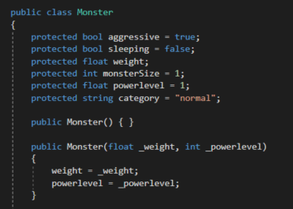
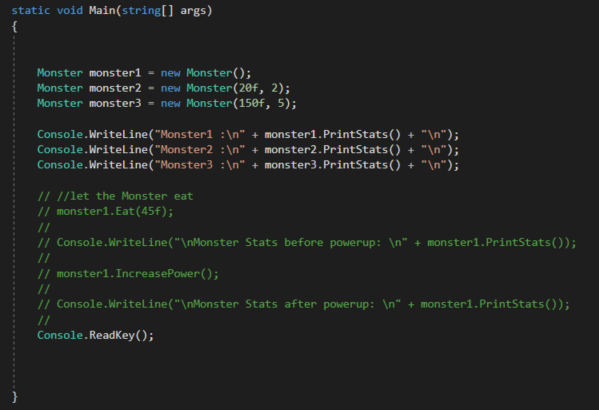
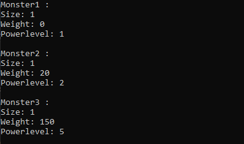

01 Kapselung und Eigenschaften
Wenn ein Objekt entworfen wird, muss überlegt werden, welche Member des Objekts für den Benutzer sichtbar (public) oder verborgen (private || protected) sind. Eine Kapselung besteht dann, wenn ein Member für den Benutzer nicht sichtbar ist.
Die Gründe für eine Kapselung sind, dass der Benutzer z.B. als privat deklarierte Member des Objekts nicht ändern kann, wodurch weniger Fehler durch den Benutzer entstehen können. Fehler wären in diesem Fall die Zerstörung des Codes, durch Fehleingaben oder durch Manipulation von Membern, die nicht manipuliert werden sollten. Das Risiko, dass der Code zerstört oder beschädigt wird, erhöht sich mit der Anzahl der öffentlichen Felder, da diese leicht manipuliert und verändert werden können. Zusätzlich erleichtert es die Fehlersuche, da es durch Kapselung weniger mögliche Fehler gibt.
Who needs encapsulation, my game works just fine!
Bei kleineren Projekten könnte man meinen, dass dies keine Rolle spielt, jedoch verfügen auch kleinere Projekte über 50 bis 100 Klassen. Je mehr man Objekte kapselt, desto weniger besteht die Gefahr, dass man fertigen Code zerstört (nicht zuletzt, da man die Übersicht verliert). Daher sollte generell immer so viel gekapselt werden wie möglich!
02 Konstruktoren, Destruktoren & Speicherverwaltung
Konstruktor:
 Wie wir bereits gelernt haben, kann man Methoden mit Mitgabeparametern erstellen. Etwas derartiges ist auch mit Klassen möglich! Der Sinn dahinter ist, dass man eine Klasse direkt mit Parametern instantiieren kann, diese Parameter wiederum inititalisieren Variablen des Objekts. Um beim Beispiel der Monster Klasse zu bleiben:
Nehmen wir an, wir wollen mehrere verschiedene Monster intantiieren, statt jedes Objekt zuerst zu erstellen und anschließend mittels Methoden die Variablenwerte zuzuweisen, können wir dem Objekt direkt die von uns gewünschten Werte einfügen das würde dann so aussehen.
Ein Konstruktor wird nach dem folgenden Prinzip erstellt:
Wie wir bereits gelernt haben, kann man Methoden mit Mitgabeparametern erstellen. Etwas derartiges ist auch mit Klassen möglich! Der Sinn dahinter ist, dass man eine Klasse direkt mit Parametern instantiieren kann, diese Parameter wiederum inititalisieren Variablen des Objekts. Um beim Beispiel der Monster Klasse zu bleiben:
Nehmen wir an, wir wollen mehrere verschiedene Monster intantiieren, statt jedes Objekt zuerst zu erstellen und anschließend mittels Methoden die Variablenwerte zuzuweisen, können wir dem Objekt direkt die von uns gewünschten Werte einfügen das würde dann so aussehen.
Ein Konstruktor wird nach dem folgenden Prinzip erstellt:
//public KlassenName(Parameter){Setzen der Variablen}
public Class Test{
int ichBinEinInt; //noch nicht initiiert
public Test(int _MitMirWirdInitiiert){
ichBinEinInt = _MitMirWirdInitiiert; //initiiert für das Objekt
}
}
Am Beispiel unserer Monster Klasse sähe die Erstellung und Anwendung eines Konstruktors so aus:
  
Vermutlich ist an dieser Stelle bereits aufgefallen, dass über dem Konstruktor, der Werte entgegen nimmt, ein sogenannter Default Constructor steht. Die Funktionsweise ist mit der von einem Method Overload zu vergleichen:
Instantiiere ich ein Objekt ohne Mitgabeparameter, so greift der Default Constructor und erstellt dieses Objekt.
Instantiiere ich ein Objekt mit Mitgabparameter, so greift der Konstruktor, der Mitgabeparameter entgegen nimmt.
Destruktoren:
Der Destruktor a.k.a. Finalizer sorgt dafür, dass ein nicht verwendetes Objekt vom GarbageCollector erfasst wird, damit dessen Ressourcen freigegeben werden können (geschieht automatisch). Beispiel Destruktor:
public class Test(){
//Constructor
public Test(){
}
//Destructor
~Test(){
//Is called once the GarbageCollector locks onto the object
Console.WriteLine("Aaargh, The De-Creator is watching me!");
}
}
Wann sollte man einen Destruktor verwenden? Generell findet er nur in sehr seltenen Fällen Einsatz, z.B. wenn eine Klasse ressourcenintensiv mit einer Ressource gekoppelt ist und die Ressource erst gesäubert werden muss, damit die Klasse “beendet” werden kann.
03 Statische Member und statische Klassen
Durch Voranstellen den Schlüsselworts static können Klassen und Member als statisch deklariert werden. Statische (static) Klassen können nicht instantiiert werden. Statische Klassen können nur statische Member enthalten. Auf statische Member wird über Punktnotation zugegriffen und zwar wie folgt: KlassenName.Membername
In der Praxis werden statische Klassen verwendet um Methoden für allgemeine Berechnungen und dergleichen bereitzustellen, da nicht extra ein Objekt der Klasse erstellt werrden muss, um auf ihre Methoden zurückgreifen zu können.
04 Namensräume
Namespaces dienen in erster Linie der Organisation von Projekten und Klassen. Man kann mit ihrer Hilfe Klassen unter einem Namespace “zusammenfassen”. Namespaces sind nicht zuletzt für große Softwareprojekte und deren Organisation sehr wichtig.
05 Partielle Klassen
Zitat
Es ist möglich, die Definition einer Klasse, einer Struktur, einer Schnittstelle oder einer Methode auf zwei oder mehr Quelldateien aufzuteilen. Jede Quelldatei enthält einen Abschnitt der Typ- oder Methodendefinition. Die Teile werden bei der Kompilierung der Anwendung miteinander kombiniert.
In größeren Projekten kann dies sinnvoll sein, damit zwei Entwickler parallel an einer Klasse, die auf mehrere Dateien aufgeteilt ist,arbeiten können.
Um eine sog. partial class zu verwenden, wird dem class identifier vorangestellt.
public partial class TestClass{
public void SomeMethod(){
//Some Code
}
}
public partial Class TestClass{
public void AnotherMethod(){
//Even more Code
}
}
06 Naming Conventions
Damit der Code lesbar und schnell verständlich wird, sollten immer die Naming Conventions eingehalten werden, sämtliche Conventions können am Ende der Seite unter Links gefunden werden. Hier einige wichtige Beispiele:
- Variablen werden mit camelCase Schreibweise benannt -> der erste Buchstabe ist klein, es gibt keine Leerzeichen und jedes angefügte Wort beginnt mit einem Großbuchstaben. Bsp.: float ichBinEineVariable;
- Static Variabalen werden mit PascalCase beschrieben. Dieser ist ähnlich dem camelCase, nur dass der erste Buchstabe groß geschrieben wird. Bsp.: static int IchBinStatisch;
- Methoden werden mit PascalCase beschrieben.
- Enum Typen werden mit PascalCase beschrieben.
- Delegaten werden mti PascalCase beschrieben.
- Klassennamen sind niemals im plural zu verfassen. Bsp.:
class Menschensondern class Mensch
07 Formattierungstipps
- Durch das gedrückt haltens von Alt kann mit der Maus ein ganzer Bereich des Codes markiert und bearbeitet werden.
- Markierten Code auskommentieren: Strg + K + C
- Einfache Suche: Strg + I
- Um z.B. nach einer if-Kondition direkt die Klammern einzufügen: if schreiben und tab zwei Mal drücken
- Code in eine if-Kondition oder for Schleife einbetten: Code Markieren und Strg + K + S
- Um das gegenstück eine “{” Klammer zu finden: Strg + + (plus neben der Eingabetaste)
- Gewählte Linie duplizieren: Strg + C + V
- Alle Funktionen einklappen: Strg + M + O
- Selektion Formatieren: Strg + K + F
Quellen und weiterführende Links
01 https://www.lernmoment.de/alle/was-ist-datenkapselung/
http://openbook.rheinwerk-verlag.de/csharp/kap01.htm
02 https://ericlippert.com/2015/05/18/when-everything-you-know-is-wrong-part-one/
https://www.tutlane.com/tutorial/csharp/csharp-destructor-with-examples
https://csharp.net-tutorials.com/de/118/klassen/kon-und-destruktoren/
https://docs.microsoft.com/de-de/dotnet/csharp/programming-guide/classes-and-structs/destructors
03 https://www.c-sharpcorner.com/UploadFile/74ce7b/static-class-in-C-Sharp/
https://csharp.net-tutorials.com/classes/static-members/
04 https://docs.microsoft.com/de-de/dotnet/csharp/programming-guide/namespaces/using-namespaces
05 https://docs.microsoft.com/de-de/dotnet/csharp/programming-guide/classes-and-structs/partial-classes-and-methods
06 https://github.com/ktaranov/naming-convention/blob/master/C%23%20Coding%20Standards%20and%20Naming%20Conventions.md